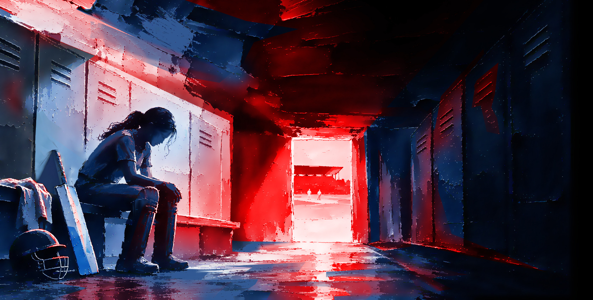

স্বাধীন অনুসন্ধানমূলক নিউজরুম
সুশাসন নিশ্চিত করার লক্ষ্যে গভীর অনুসন্ধানের মধ্য দিয়ে ক্ষমতার অপব্যবহার খোঁজে এবং জনস্বার্থে গোপন সত্য প্রকাশ করে।
Homepage mockup, not the live site
ভিডিও
সব ভিডিও →
অনুসন্ধান | ভিডিও
নারী ক্রিকেটে যৌন হয়রানির ১৫ বছরের চিত্র, জেনেও চুপ ছিল বিসিবি
কেউ জড়িয়ে ধরেছেন, কেউ দলে জায়গার বিনিময়ে যৌন সম্পর্কের প্রস্তাব দিয়েছেন। ১০৪ জনের সাক্ষাৎকার আর বিসিবির অপ্রকাশিত একটি তদন্ত প্রতিবেদন ঘেঁটে দ্য হুইসেল খুঁজেছে, মেয়েরা কেন চুপ থাকতে বাধ্য হন, আর বোর্ড কেন জেনেও নীরব ছিল।
৪ নভেম্বর, ২০২৬ ভিডিওটি দেখুনআরও প্রতিবেদন

অনুসন্ধানলাগামহীন যৌন হয়রানি
অভিযুক্ত কোচ-নির্বাচকদের থামায়নি বিসিবি
জেলার মাঠ থেকে জাতীয় দল, ক্রিকেটে জায়গা করে নেওয়ার বিভিন্ন পর্যায়ে যৌন হয়রানির অভিযোগ পেয়েছে দ্য হুইসেল।
১ নভেম্বর, ২০২৬ নির্বাচনী বিশ্লেষণকথার বন্যায় নীরবতার রাজনীতি
কথার লড়াইয়ে প্রতিপক্ষকে বিদ্ধ করেছেন ঠিকই, কিন্তু জনগুরুত্বপূর্ণ ও দেশের ভবিষ্যৎ নির্ধারণী কিছু প্রশ্নে দুজনেই ছিলেন নিশ্চুপ।
১০ ফেব্রুয়ারি, ২০২৬